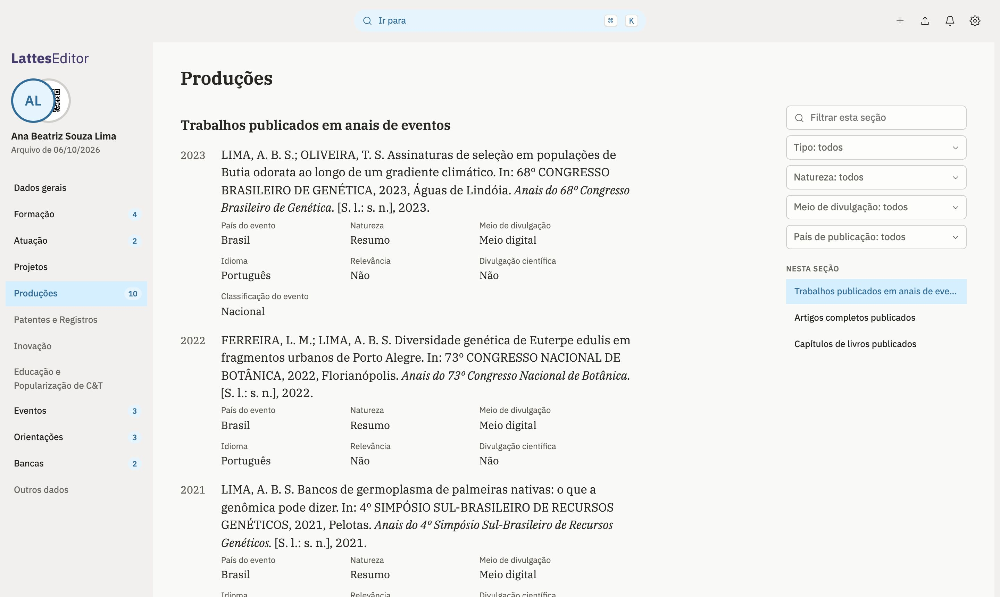

Para quem mantém o Lattes em dia
Seu Currículo Lattes num editor que não atrapalha
Abra a exportação do Lattes, ache qualquer item por seção ou por ano, cadastre produções a partir do DOI, revise o que mudou e leve de volta ao Lattes, pelo Importar ou pela extensão. O arquivo fica no seu computador.
Sem conta e sem servidor. Gratuito, para macOS, Windows e Linux.

O que já funciona
-
Abre a exportação do Lattes
Solte o
CV_<id>.zipou o.xmlque o Lattes gera em Ferramentas › Exportar. Se nada mudar, o arquivo salvo sai idêntico ao original, byte a byte. -
Seções, anos e atalhos
As listas longas se dividem por ano. ⌘K leva a qualquer seção ou grupo, e G e uma letra abre cada uma das doze seções.
-
Filtros em cada seção
Uma busca que casa pelo começo das palavras e filtros tirados da própria lista, como tipo e meio de divulgação, num painel ao lado do conteúdo.
-
Produção nova pelo DOI
Cole o DOI e o Crossref preenche título, ano, autores, periódico ou evento e páginas. Você confere antes de salvar. Só o DOI sai do seu computador.
-
Revise antes de levar
A lista de alterações compara a sua cópia com a exportação original. Cada campo mostra o valor antigo e o novo, com botão de copiar e de descartar.
-
Ponte com o Lattes em teste
Uma extensão para Chrome e Brave grava as alterações no Lattes a partir da sua própria sessão, uma de cada vez, e lê de volta para conferir. Hoje leva os vínculos da atuação e o resumo; nenhuma senha passa por ela.
-
Imprimir ou salvar em PDF
Escolha as seções ou um modelo e veja a página antes de imprimir. Sai nas regras da NBR 14724, em preto, com as referências na NBR 6023 e, se quiser, o código QR do currículo no cabeçalho.
-
Compartilhar com QR
Um código QR do seu currículo público no Lattes, para baixar em PNG e pôr em pôster, slide ou crachá. Gerado no próprio app.
-
Modo de privacidade
Para mostrar a tela a alguém: documentos, nascimento, filiação, nacionalidade e endereço residencial ficam mascarados, e a foto vira um mosaico. Vem ligado.
Como funciona
-
Exporte do Lattes
No Lattes, Ferramentas › Exportar baixa o currículo inteiro em XML.
-
Edite aqui
Cada edição fica salva no app. Itens novos ganham formulário próprio, com autores, áreas do conhecimento e palavras-chave.
-
Leve ao Lattes
Produções novas entram pelo Importar do Lattes. O resto vai pela extensão da ponte ou, sem ela, campo a campo, guiado pela lista de alterações.
Baixe o app
O editor é um aplicativo para o computador: abre e salva o arquivo direto no disco, com as janelas do sistema. Gratuito e de código aberto.
-
macOS
Baixar para macOSO app ainda não tem assinatura da Apple. Na primeira vez, o macOS bloqueia a abertura; libere em Ajustes do Sistema › Privacidade e Segurança.
-
Windows
Baixar para WindowsSem assinatura digital ainda: o SmartScreen avisa na primeira vez. Abra os detalhes do aviso e escolha executar.
-
Linux
Baixar .debInstale pela central de programas ou com
sudo apt install ./LattesEditor-Linux.deb. Em outras distribuições, use o AppImage, que é maior porque leva junto o motor de páginas, e dê permissão de execução a ele antes de abrir.
Seus dados ficam com você
A exportação do Lattes traz CPF, data de nascimento e endereço. Por isso o editor não tem servidor nem conta: o arquivo é lido e guardado no próprio computador, e o arquivo salvo vai para o seu disco.
- Cópia de trabalho guardada no app, com histórico das últimas edições.
- Nenhum dado do currículo vai para servidor nosso: não há servidor.
- Saem do computador só a busca do DOI no Crossref, quando você pede, e a foto do perfil, buscada no CNPq pelo código do currículo.
- Com a extensão, as alterações vão direto para o Lattes, na sua sessão, só quando você clica em aplicar.
Em breve
-
em breve
BibTeX, RIS e Word
A produção para Zotero, Mendeley, EndNote e ORCID, e o currículo em DOCX para editais que pedem arquivo editável.